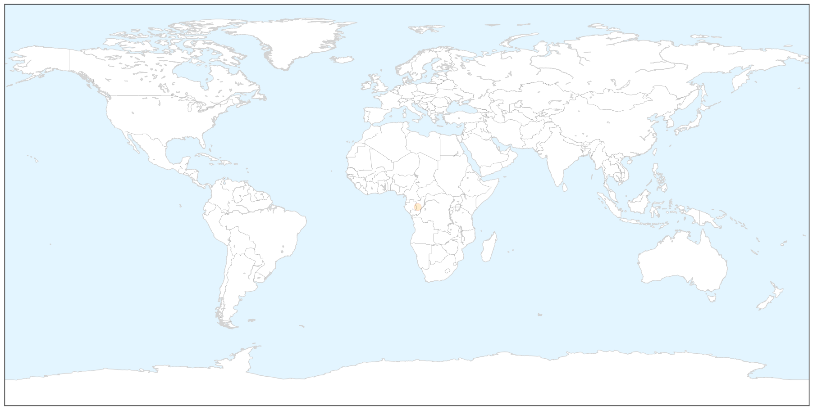
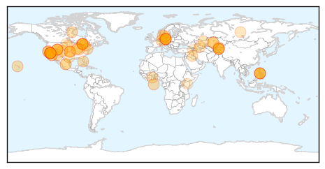
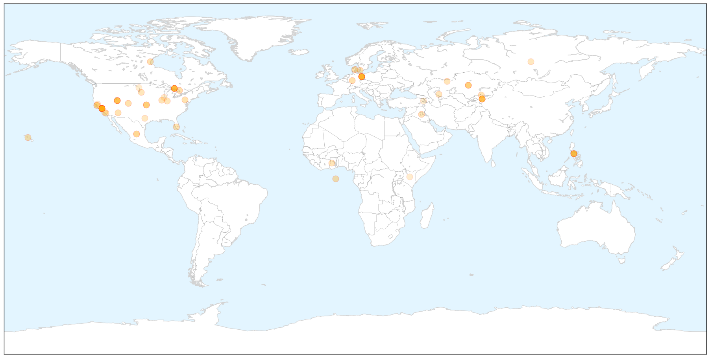
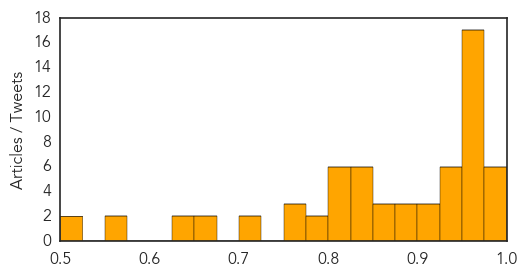

Pertussis
30-Day Web Trend
13 alerts, 4 warnings

30-Day Twitter Trend
0 alerts, 0 warnings

Article Locations

X

Article Confidences

Top Articles:
Top Tweets:
-
No tweets found for Feb 25, 2015
Measles
30-Day Web Trend
11 alerts, 4 warnings

30-Day Twitter Trend
3 alerts, 0 warnings

Article Locations

X

Article Confidences
Top Articles:
- 0.995
- Measles Cases Continue to Rise across the US
- 0.983
- Officials declare end of measles outbreak in Utah but have warning for residents
- 0.980
- Measles vaccinations urged in Europe amid outbreaks
- 0.978
- WHO urges more vaccinations against measles in Europe amid outbreak
- 0.977
- WHO calls for vaccinations against European measles epidemic
- 0.975
- The Chaffee County Times: Free Content
- 0.974
- WHO calls for vaccinations against European measles epidemic
- 0.974
- WHO calls for vaccinations against European measles epidemic
- 0.972
- Toddler dies of measles in Berlin, first death in outbreak
- 0.971
- Utah Department of Health declares end to measles outbreak
- 0.970
- Sudbury health officials on the alert for measles
- 0.969
- As flu season winds down, health officials continue to encourage getting vaccinated
- 0.968
- Officials: Measles outbreak in state is over, cost $115,000 to manage
- 0.968
- Measles is no longer spreading in Utah
- 0.967
- Outbreak causes vaccination debate to heat up
- 0.964
- Health officials urge vaccinations as measles cases on the rise
- 0.962
- Recent measles case prompts vaccination debate
- 0.954
- UN health agency ‘taken aback’ as measles resurfaces in Europe, calls for widespread vaccination
- 0.954
- 18-month-old baby dies in German measles outbreak
- 0.954
- Measles Resurfaces in Europe
- 0.953
- REFILE-WHO calls for more measles vaccination in Europe as large outbreaks persist
- 0.952
- WHO Urges Increased Vaccinations After 22,000 Cases And Multiple Deaths
- 0.950
- WHO Urges Europe to Vaccinate Against Recent Measles Outbreak
- 0.942
- As flu season winds down, health officials continue to encourage
- 0.936
- IN-DEPTH RADIO :: Toddler diagnosed with measles in Elliot Lake, Ont. :: News
- 0.936
- WHO calls for more efforts to fight measles - Xinhua
- 0.932
- lehighacrescitizen.com, news, sports, Florida info, Lehigh Acres Citizen
- 0.931
- Toddler in northern Ontario with no history of travel contracts measles
- 0.926
- OP-ED: A nurse weighs in on vaccinations
- 0.921
- Toddler Dies as Measles Outbreak Hits German Capital
- 0.909
- Illegal Immigration Did Not Cause Measles Outbreak
- 0.904
- A new threat on the U.S.-Mexico border: Americans with measles
- 0.899
- Stop Blaming Illegal Immigrants For the Measles Outbreak
- 0.884
- WHO/Europe calls for scaled-up vaccination against measles
- 0.877
- Europe: Measles outbreaks prompt WHO to call for push for vaccinations
- 0.872
- Appendix. The situation in the seven affected countries
- 0.866
- Measles 'patient zero' and why outbreak might not be over
- 0.853
- WHO ′taken aback′ by high number of measles cases
- 0.846
- Europe urged to step up vaccinations against measles
- 0.841
- Dana Hills High School
- 0.840
- WHO to provide vaccinations against measles
- 0.840
- safe or not?. Health. Tengrinews.kz
- 0.836
- Is the Lower Shore ready for measles?
- 0.832
- WHO Fights for Vaccine Campaigns After Thousands Are Infected in Europe
- 0.814
- Measles hits close to home
- 0.814
- Vaccination against measles in Kazakhstan puts teenagers into hospital beds. Health. Tengrinews.kz
- 0.812
- WHO Launches Billion-Dollar Health Appeal for Four Countries
- 0.812
- WHO Launches Billion-Dollar Health Appeal for Four Countries
- 0.808
- Elliot Lake patient’s measles diagnosis could be example of new Ontario virus – Manitoulin Expositor
- 0.804
- WHO 'taken aback' by measles outbreaks
Showing top 50 articles...
Top Tweets:
-
No tweets found for Feb 25, 2015